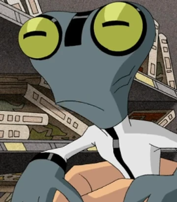

Massa Cinzenta

| Poderes | Fraquezas |
|---|---|
| Superinteligência, capaz de compreender e construir tecnologias complexas. | Pequeno tamanho, que o torna fisicamente fraco e pouco resistente. |
| Consegue escalar e entrar em espaços bem pequenos. | Pouca capacidade de combate físico direto. |
| Possui visão microscópica, agilidade aprimorada e respiração subaquática. | Seu pequeno porte dificulta escapar de animais e adversários maiores. |
Sobre sua raça
Os Galvanianos são uma espécie alienígena do planeta Galvan Prime, formada por seres humanoides extremamente pequenos, com aproximadamente 15 centímetros de altura, pele cinzenta e aparência semelhante à de um sapo. Possuem grandes olhos verdes, pupilas retangulares e um corpo adaptado para realizar movimentos ágeis e alcançar espaços reduzidos. São conhecidos por sua inteligência extraordinária, considerada uma das maiores do universo, possuindo conhecimentos avançados em ciência, tecnologia e engenharia. Além disso, apresentam grande facilidade para compreender, construir e manipular dispositivos tecnológicos complexos, podendo identificar falhas e encontrar soluções para problemas extremamente difíceis. Apesar de seu tamanho reduzido, possuem agilidade aprimorada, capacidade de escalar paredes, respirar debaixo d'água e sobreviver a grandes quedas, embora sua força física e resistência sejam bastante limitadas.